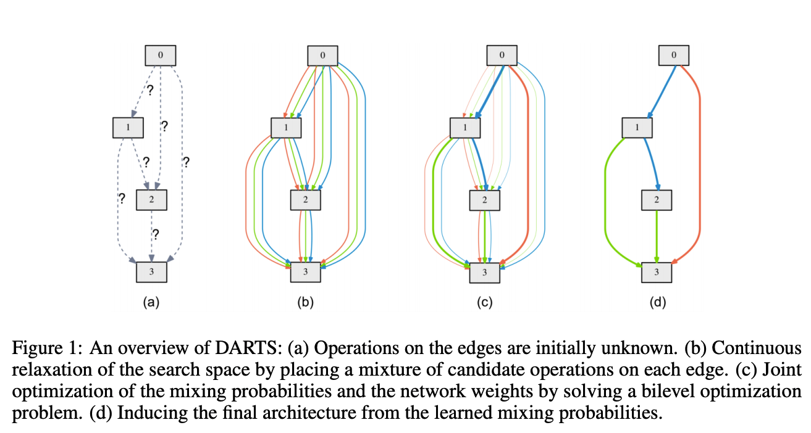

Differential ARchiTecture Search（DARTS）#
本章讲介绍三篇paper，DARTS，P-DARTS 以及 PC-DARTS，论文链接：DARTS，P-DARTS，PC-DARTS
Darts#
Abstract#
传统的neural network search，其搜索域大多为离散域，搜索方法为 RL based 或者 evolution。这篇 Darts 的搜索域则是 continuous space，利用网络的 loss 去 update 链接方式。
Introduction#
Method#
Method Description#
Darts 先将运算模块 block 进行 dense 链接（类似 Densenet）第 j 个模块的输入，是有所有 index 小于 j 的模块的输出的加权和。 在下图中，每根线代表一种可能的操作（比如 convolution，max pooling，zero链接）。那么我们在每种操作上赋予一个权重 \alpha_i ，然后根据 \alpha 来 过一个 softmax 加权计算出真实的 output 在搜索结束之后，我们会选取 \alpha_i 最大的一种操作作为我们最后的连接方式（其他的备选连接方式直接放弃）： 
Example#
以 Darts 的 figure1 为例子说明。假设 block 0 和 block 1之间有三种连接，红线代表 convolution，绿线代表 avg pooling，蓝线代表 zero 连接。在学习阶段结束之后，我们的权重参数 \alpha^{(0,1)} 为 [2.3, 0.5, 0.9]，（如果过 softmax 则是 [0.71, 0.12, 0.17]）那么 \alpha_1^{(0,1)} 的权重最大，我们选择 convolution 作为最终的连接方式。
Training Method#
在训练的时候，有两个参数需要依次优化，一个是我们的连接权重参数 \alpha，另外就是在当前权重的连接方式下，我们的最优网络参数 w 也即：在当前的 training set，我们训练出一个最优的网络参数 w^*，然后根据当前的 w^* 在 validation set 上再更新我们的连接权重 \alpha
Gradient#
所有神经网络的优化过程都绕不开梯度，Darts 同样。由（4）式可知，我们对于优化 \alpha 的梯度为： 这里将最优的 w^*(\alpha) 替换为 w - \xi\nabla_w\mathcal{L}_{train}(w, \alpha) 的原因是 1. 如果 w 足够接近最优值 w^*，那么后面的梯度也会趋近于0，近似成立。2.就算 w 并不能很接近 w^*，但我们可以保证算法的收敛性。在（5）的基础上，运用链式法则：